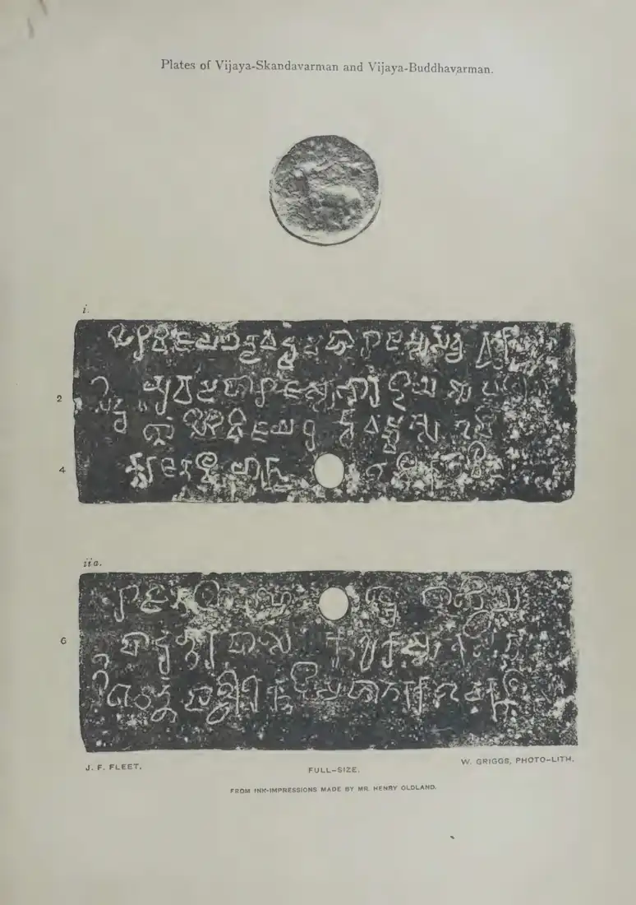
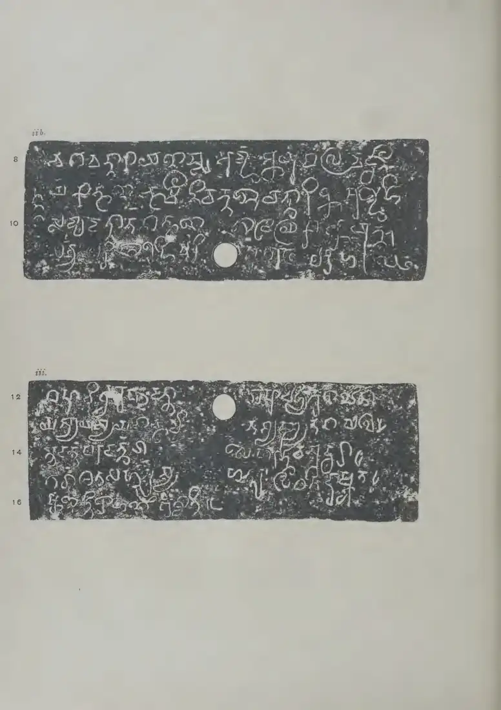

British Museum plates of Chârudêvî
BRITISH MUSEUM PLATES OF CHARUDEVI.
This inscription was first edited 25 years ago by Dr. Fleet in the Indian Antiquary, Vol. IX. p. 100 ff. On account of its archaic alphabet and of its language, which is not only Sanskrit verse (plate iii. lines 12-15), but chiefly Prākṛit prose, it has attracted much attention. Bühler succeeded in deciphering some additional portions of it,19 and a few corrections were suggested by M. Senart and myself.20 At my request, Dr. Fleet was good enough to send me a set of ink-impressions of the plates, with the help of which it has been possible to make out with some probability those portions of lines 3 to 7 which Bühler considered 'utterly unintelligible.' The only item which appears to be irretrievably lost is the figure of the regnal year at the end of the first line.
The original copper-plates, which were secured by Sir Walter Elliot, are now in the British Museum. For their finding-place and for a detailed description of them see the prefatory
| 1 Read पालनीयो. | 2 Read °दलाम्बुविन्दु. | 3 Read °लां श्रिय. |
| 4 The two aksharas चिन्य are engraved over an erasure. | 5 Catcel the anusvāra. | |
| 6 Read बुड्डा. | 7 Read °भद्रारक. | 8 Read °त्रिकलिङ्गा. |
| 9 Read संवत्सरे ऽष्टमे. | 10 Read °पक्षे. | 11 Read संवत्. |
| 13 Read दूतकश्च. | 18 Read °भद्र. | 14 Read °प्रतिबद्धेन. |
15 The visarga is meant for a sign of punctuation; compare South-Ind. Inscr. Vol. II. p. 111, note 1, and above, Vol. VII. p. 193, note 3.
| 16 Read उत्कीर्ण. | 17 Read °मेण. | 18 See note 15 above. |
| 19 Ep. Ind. Vol. I. p. 2, note 2. | ||
| 20 Above, Vol. VI. p. 88, note 10; Vol. VII. pp. 67 and 69. |
remarks of Dr. Fleet's article, which was accompanied by photo-lithographs of the inscription (on the back of the Plate) and of the seal (on the front of the Plate). The present facsimile of the inscription has been prepared, under Dr. Fleet's superintendence, from fresh ink-impressions made for him, in 1903, in the British Museum. The seal has been reproduced from a plaster cast taken by Mr. Griggs from a sealing-wax impression which was made at the same time in the British Museum. The sealing-wax impression shows, in the centre of the seal, a standing animal which faces the proper right and looks like a deer, but must be meant for a bull,1 the crest of the Pallavas, and over the back of the bull, a few indistinct symbols which may be taken for the sun, a crescent, and perhaps one or more stars.
The characters of the inscription resemble those of the Hīrahađagalli plates of Šiva-Skandavarman,2 but are less ornamental and more irregular. This seems to be due to the fact that the engraver mechanically copied a draft which had been written in a pronounced running hand. Instances are the vá in line 14 and the vúm of gavám (l. 15), the subscribed v of savva0 (l. 11) and the subscribed ch of bahubhišch[á]0 (l. 12), the vowel i of gámeyiká (l. 10) and of píbati (l. 15).3 The group tta, while in most cases resembling nna,4 has two other shapes: in uttare (l. 6) the upper t has a fully developed loop, as in Tamil, and in chhettañ (l. 7) and dattá (l. 12) the lower t is fashioned in the same manner. The initial á of áyu (l. 8) differs from that of Átukassa (l. 6), áyuttá (l. 10) and ónatti (l. 16). In the ná of nivattaná (l. 9) the n is placed in a slanting position, and the á fills up the right upper corner. Another peculiar letter is the tha of pariharatha and pariharápe[tha] (l. 11). A rudé final form of m occurs at the end of ll. 13, 14, 15. Marks of punctuation are used after siddha on the left margin of plate i. and at the end of the inscription. In ll. 12-15 every odd páda of the two slókas is divided from the next by a blank space. Plates ii. a and ii. b are marked like the pages of a book by the numerical symbols '2' and '3' on the left margin, and the numerical symbol '4' occurs in l. 9.
While in the Andhra inscriptions every double consonant is expressed by a single letter, the orthography of Chârudêvî's grant is in accordance with that of the literary Prákrīt.5 In the word sañvvachchhara (l. 1), v is doubled after anusvára. As to the language of the inscription, noteworthy words are Bháraddáya6 (l. 2) for Bháradvája, taláka, heṭ[th]a, páñiya (l. 5) and chhetta (l. 7).7 Instances of the nom. plur. neutr. are the three words nivattaná chattári sampadattá (l. 9 f.). The abl. sing. [kú]pát (l. 5 f.) is due to a relapse into Sanskrit. Pronominal forms are amhañ (l. 8) and amhehiñ (l. 9), the genitive and instrumental of asmad, and tañ (l. 10), the acc. sing. neutr. of tad. Verbal forms are the gerunds kátúṇa (l. 9) and nátúṇa (l. 10) and the imperatives pariharatha pariharápe[tha] (l. 11).
The inscription is dated in some year of the reign of the Mahárája Vijaya-Skandavarman, the figure or figures of the date being illegible. It contains an order by the queen of the heir-apparent (Yuvamahárája) Vijaya-Buddhavarman, who was one of the Pallavas and, as such, a Bháradvája or member of the Bháradvája gótra. I read the queen's name as Chârudêvi, and that of the prince whose mother she claims to have been as [Bu]ddhi[yam]kura or, in Sanskrit, Buddhyañkura. In favour of my restoration of this damaged word it may be stated that añkura, 'a sprout,' is synonymous with pallava, and that other Pallavas bore the similar surnames
1 Compare Dr. Fleet's Dyn. Kan. Distr. p. 319, note 5.
2 Ep. Ind. Vol. I. p. 2 ff.
3 These two words were already noted by Bühler, ibid. p. 2, note 2.
4 Compare e.g. nivattaná (l. 9) with bhagavannd0 (l. 8).
5 In this respect the two grants of Šiva-Skandavarman (Ep. Ind. Vol. I. p. 4, and Vol. VI. p. 86) occupy an intermediate position.
6 The same form occurs in the two grants of Šiva-Skandavarman.
7 On the four last words see Prof. Pischel's edition of Hêmachandra's Prákrīt grammar, I. 202; II. 141; I. 101; II. 17.
Plate 1 is bound after this page.
Plate 2 is bound after this page.
Nayânkura, Tarunânkura and Lalitânkura.1 Thus the first plate of the inscription supplies the following short Pallava genealogy:—
Mahârája Vijaya-Skandavarman.
Yuvamahârája Vijaya-Buddhavarman, married Chârudêví.
Buddhyânkura.
The syllables which follow the word Chârudevî at the end of the first plate can be read and restored with the help of the corresponding portions of four cognate inscriptions.
Nâsik, No. 3, l. 11 (p. 65 above), and No. 4, l. 2 (p. 71 above)— ânapayati Govalhane amacha[î*].
Mayidavôlu plates, l. 3 f. (above, Vol. VI. p. 86)— Dhaîñakaçe vâpataî ânapayati.
Konđamudi plates, l. 6 f. (ibid. p. 316 f.)— ânapayati Kûdûre vâpataî.
On the strength of these analogous cases I propose to read at the end of line 4— Ka[ðuke] vîya . . ., to correct the second word to viya . . ., and to restore viyâputaî, which is another possible Prâkrît form of vâpataî in the Mayidavôlu and Konđamudi plates. It is true that the verb ânapayati is missing in our inscription; but the same is the case in the first sentence of the Hîrahaðagalli plates.2 As in that document, we seem to have here a sort of official preamble, corresponding to the address of a modern letter— ‘Chârudêvî to the official at Ka[ðaka].’ As regards this Prâkrît word, its Sanskrit equivalent is Kataka, but the name cannot refer to the town of Cuttack in Orissa, which is far to the north of the Pallava territory. Besides, it must be borne in mind that the second and third syllables of Ka[ðake] are injured, and that the true reading of the word may after all be a different one.
The remainder of the inscription refers to a gift of land made by Chârudêvî. This land must have been situated in Ka[ðaka], to the officer in charge of which place the order was addressed. The grant consisted of a field near the ‘King’s Tank.’ The recipient was a temple of Nârâyaṇa (Vishnu) at Dâlûra (l. 7), a place which I am unable to trace. The Ájñapti (or Dâtaka) was Rôhiñigupta (l. 16).
TEXT.3
First Plate.
Siddha ||4
1 Siri-Vijaya-Khandava[m]ma-mahârájassa sañvvachchhar[â] . . [|*]
2 yuvamahârájassa Bhâraddâyassa Pal[l]avâ-
3 ñam si[r]i-Vijaya-Buddhavammassa devî [Bu]ddhi .5
4 kura-janavî6 Chârudevi Ka[ðake] vîya . . 7 [|*]
Second Plate; First Side.
5 Râjatalâka-het[th]e pâniya .8
6 pâd=uttare pâse Âtukassa kasita .9
7 chhettam Dâlûre Kûlî-Mahâtaraka-10devakula[ssâ]
1 South-Ind. Inscr. Vol. I. pp. 3 and 5; Vol. II. p. 341; above, Vol. VI. p. 320.
2 Ep. Ind. Vol. I. p. 5, text lines 1-6.
3 From ink-impressions received from Dr. Fleet.
4 On the left margin of the plate.
5 The subscribed l of the second syllable of Pallavâ in line 2 has obliged the engraver to place the syllable ddhi too low, the top of the i being on a level with the top of the broken syllable bu.— Restore Buddhiyañkura-
6 Read jananl.
7 Read viyâputaî.
8 Restore pâniya-kûpâd=.
9 Restore kasitavvaî.
10 Read -Mahâtâraka-; Mahânaraka, which is another possible reading, would be a very unusual name for a temple.
Second Plate; Second Side.
8 bhagavan-Nârâyanassa amham âyu-bala-vaddhanî-
9 yam kâtûna bhûmî-nivattanâ chattâri 4 amhehimî1
10 sampadattâ [*] tam nâtûna gâmeyi(ya)kâ âyuttâ
11 savva-parihârehi pariharatha pariharâpe[tha] [*]
Third Plate.
12 Bahubhir=vva[s]udhâ dattâ bahubhis=ch=[â]nupâlitâ [*]
13 yasya yasya yadâ bhûmih2 tasya tasya tadâ phalam [||*]
14 Sva-dattam3 para-dattam3 vâ yê4 haratta vasu[n]dharâm [*]
15 gavâm șata-sahasrasya hantuh pibati dushkîitam [||*]
16 Ânatti Rohan[i]gu[tt]â=tti5 ||
TRANSLATION.
Success ! (Line 1.) The years . . . (of the reign) of the glorious Mahârâja Vijaya-Skandavarman.
(L. 2.) Chârudêvi, the queen of the Yuvamahârâja, the Bhâradvâja, the glorious Vijaya-Buddhavarman (of the family) of the Pallavas, (and) mother of [Buddhyañ]kura, (addresses the following order) [to the official at] Ka[tâka]:—
(L. 5.) “The field to be ploughed by Âtuka on the northern side of the drinking-well below the King’s Tank (Râjatadâka), (containing) four—4—nivartanas of land, has been given by Us, making (it) a means for increasing Our length of life and power,6 to the god Nârâyana of the Kûlî-Mahât[â]raka temple at Dâlûra.
(L. 10.) “Knowing this, ye, the villagers (and) officials, exempt (this field) with all immunities, (and) cause (it) to be exempted!”7
[Lines 12-15 contain two of the customary verses.]
(L. 16.) “The Âjñapti3 (is) Rôhiñigupta.”9
1 The anusvâra is distinctly visible after the nî at the end of the preceding line.
2 Read bhûmis=tasya.
3 Read -dattâm.
4 Read yô harôta.
5 Read °gutto=tti.—The î of Rohanîo has an unusual shape; perhaps the sra of -sahasrasya in the preceding line interfered with its proper execution. The ttâ of °guttâ= looks almost like vvâ.
6 The Sanskrit equivalent of the words amham âyu-bala-vaddhantyam occurs in the Uruvupalli grant; Ind. Ant. Vol. V. p. 52, text line 27 f. Instead of vaddhantyam, the corresponding portions of the Hîrahadagalli, Mayidavôlu and Kondamudi plates have vadhanike.
7 The corresponding Sanskrit phrase sarvva-parihâraih pariharata parihârayata cha occurs in the Mângaûr grant; Ind. Ant. Vol. V. p. 156, text line 30.
9 In Rohanîgutta, Rôhanî is a vulgar form of Rôhiñî, which occurs above, Vol. IV. p. 295, text line 5; the usual form in Tamil inscriptions is Urôșanî.

